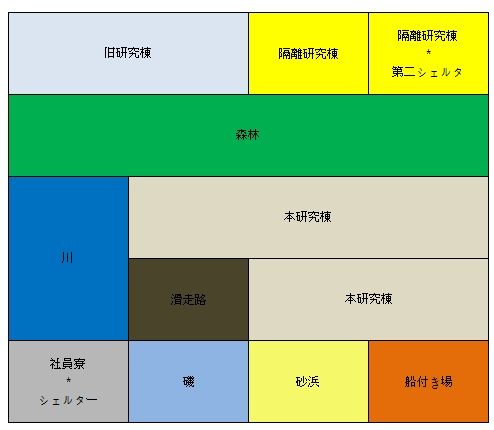

世界最大級研究所を持っている島。
孤島は、3つの研究棟が存在し、各研究棟では、大規模な実験が行われている。
本研究棟では、最大の研究棟として、いくつかの方法を介して癌を研究し、癌治療剤を開発しており、最も多くの研究者が存在する。
隔離研究棟は、旧研究棟の隣にように建設されており、多くの実験体が存在して危険性によって絶縁されている。
旧研究棟は、孤島に最初の研究施設を作るために建設された研究棟として、本研究棟に必要な基礎的な実験を行った研究棟である。
安全で快適なリゾート級の設備
社員寮、シェルター、滑走路、船付き場などの施設が存在する。
滑走路は、飛行機の格納庫を含む軽飛行機が離陸するために、すべてのものが存在する。複数台の軽飛行機は孤島で外部に出て行くことができる最も簡単な方法である。
しかし、軽飛行機は免許を持っている人だけが運転が可能である。
船付き場には多くの人を移動させることができるクルーザーが停泊している。
クルーザーのシステムは、ほとんどのコンピュータシステムとして自動的に使用可能であるがクルーザーを運転するためには、特別な認証が必要である。
シェルターは、バイオハザードのような危険な状況に避難するために建設された。シェルターに存在するシステムに登録すると、クルーザーを運転するための認証を受けることができる。